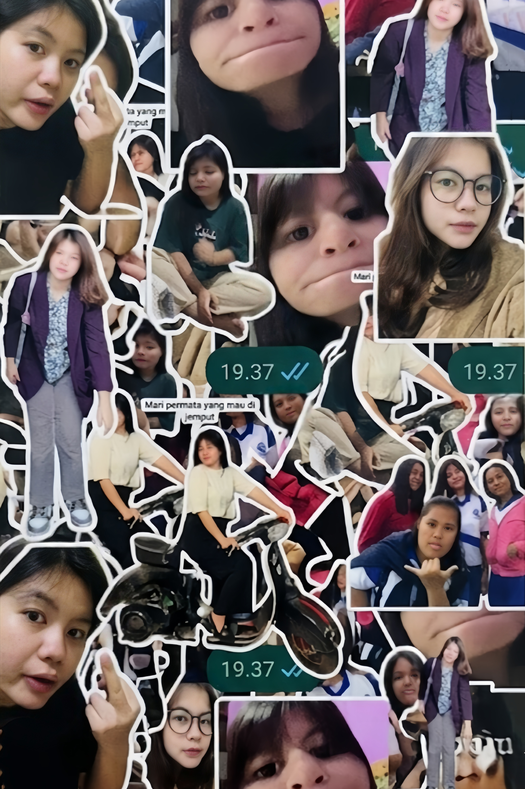
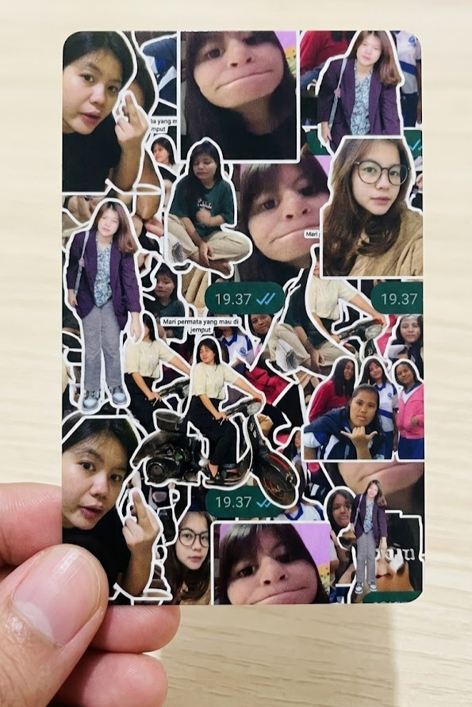
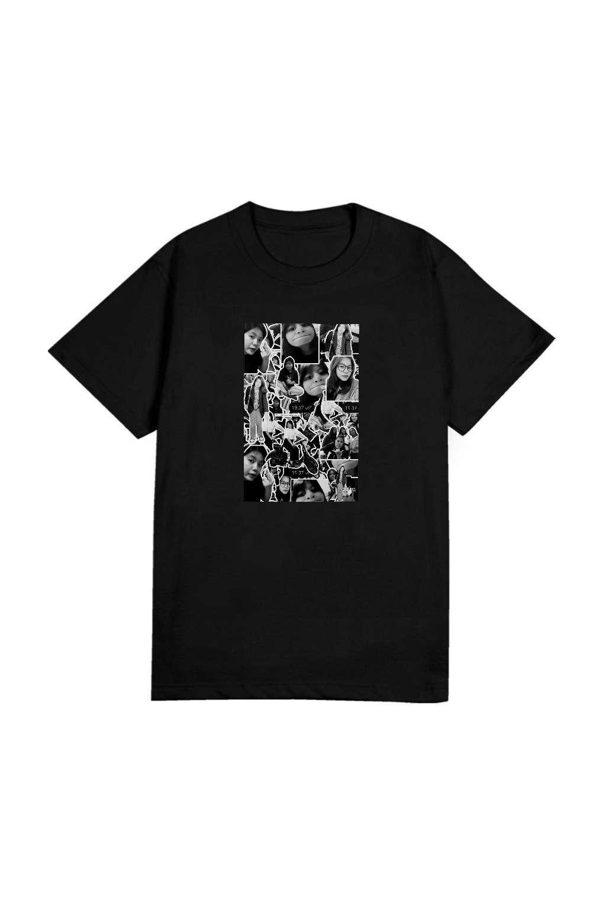
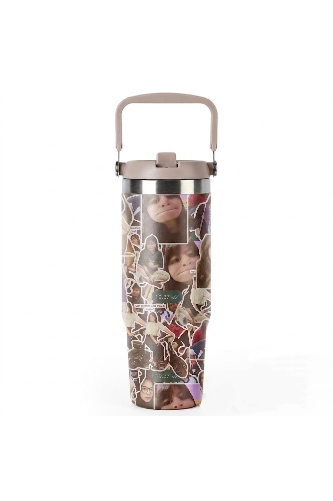
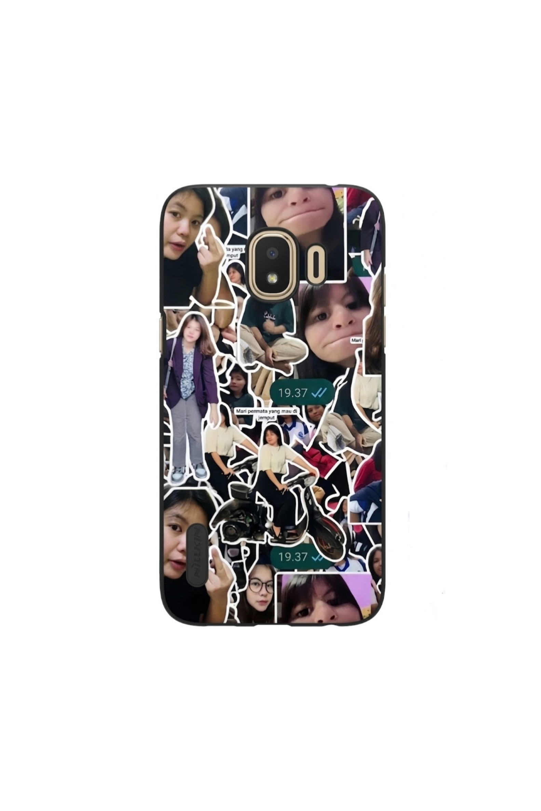
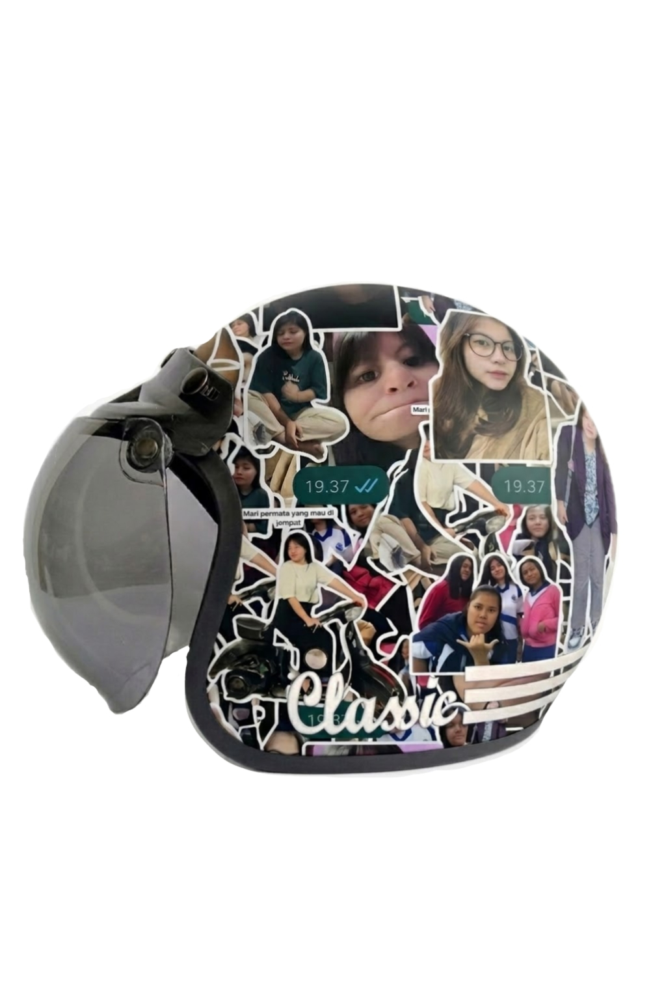

September
"Every beautiful story has a beginning. This one starts in September"
The Journey of a Design






Small Moments
Rumah Sakit
Kemarin aku nemenin temenku ke rumah sakit. Kasihan sih, dia habis jatuh dari tangga. Pas lihat kakinya... ya lumayan bikin ngilu juga.
Sampai di ruang pemeriksaan, dokter langsung melihat lukanya sambil menggeleng pelan.
"Hmm... sepertinya lukanya cukup dalam."
Aku sama temenku langsung saling pandang.
Dokter melanjutkan,
"Kayaknya kakinya harus dijahit. Kalau dibiarkan, risikonya bisa lebih besar."
Ya sudah... daripada kenapa-kenapa, kami pun setuju.
Beberapa menit kemudian, temenku dibawa masuk ke ruang tindakan. Dokter sudah siap dengan suntikan bius. Begitu jarumnya hampir menyentuh kaki, temenku langsung teriak sekencang-kencangnya...
"MAAAHHHHH!!"
Semua orang langsung menoleh. Suasana yang tadinya tegang mendadak hening. Aku kira dia bakal ngomong,
"Mah... aku takut..."
atau
"Mah... aku sayang Mamah..."
Eh... Beberapa detik kemudian dia malah lanjut teriak,
"MAH... MINTA KIKOOOOOO!!"
WKWKWK.
Dokternya yang tadi serius langsung berhenti. Terus senyum. Sambil masukin tangan ke kantong jas, beliau billing,
"Hehehe... eitss... bagi dua."
LAH!!! Dia malah ngeluarin es Kiko beneran dong xixi. Aku yang dari tadi bengong pun langsung refleks ngomong.
"KIKO... ENAK TAUUU!!"
WKWKWK. Sampai sekarang aku masih bingung... Itu tadi dokter atau sales Kiko?
Beberapa bulan kemudian, waktu aku lagi asik nonton FTV "Romansa Cinta di Kandang Bebek", tiba-tiba muncul iklan.
"SAYA? JADI DUTA SHAMPO LAIN? HAHAHA... UPS, DULU PERNAH!"
Aku langsung nunjuk TV sambil histeris layaknya penonton K-Pop ngeliat idolnya secara langsung.
"LAH... ITU KAN DOKTER YANG BAGI-BAGI KIKO KEMARIN!"
Sejak saat itu aku yakin... Beliau bukan dokter. Beliau cuma lagi syuting jadi dokter. WKWKWK.
Oh iya...
Untungnya kemarin aku sempat ngambil satu es Kikonya. Lumayan tau... gratis. WKWKWK.
Kalau kam mau juga... Kabarin aja. Nanti ku kasih setengah... hehe. 🍦
One Last Letter
A Little Gift
Sebelum selesai...
Siapakah yang paling alay dari dua nama berikut?
WKWKWK
Terima kasih sudah meluangkan waktu untuk membuka hadiah kecil ini.
Semoga senyummu hari ini menjadi salah satu kenangan yang selalu kamu ingat.
Sekali lagi...
Selamat ulang tahun!!
Crafted by Putra